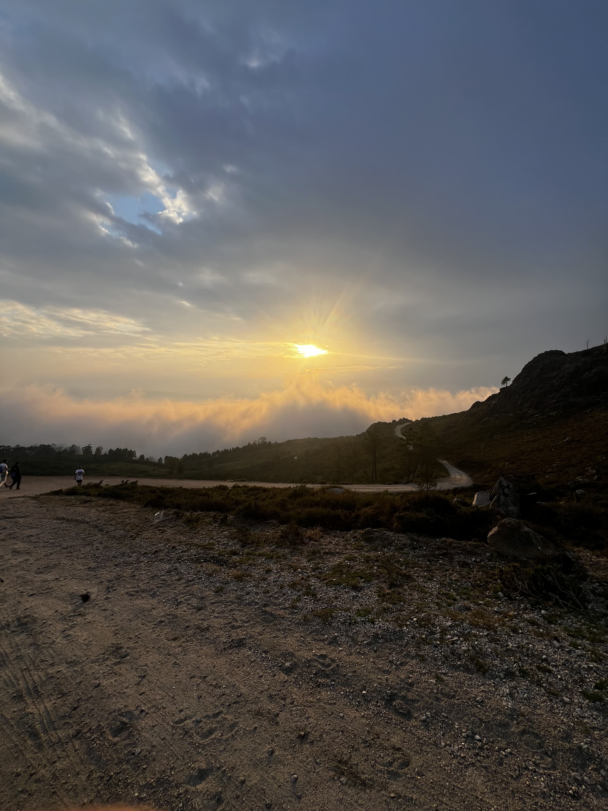

Bienvenidos a mi blog
Mi nombre es Pedro Fernandez. Hace cinco años decidí vivir aventuras alrededor del mundo con una mochila. He visitado todos los continentes, viviendo experiencias increíbles. A través de este blog, quiero compartir mis historias, consejos y fotos con todos ustedes.
Exploren los diferentes destinos que he visitado y aprendan a viajar de forma económica, mientras descubren culturas fascinantes y rincones escondidos del mundo. ¡Únete a la aventura!